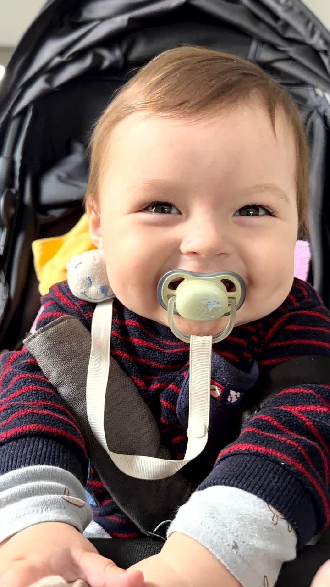
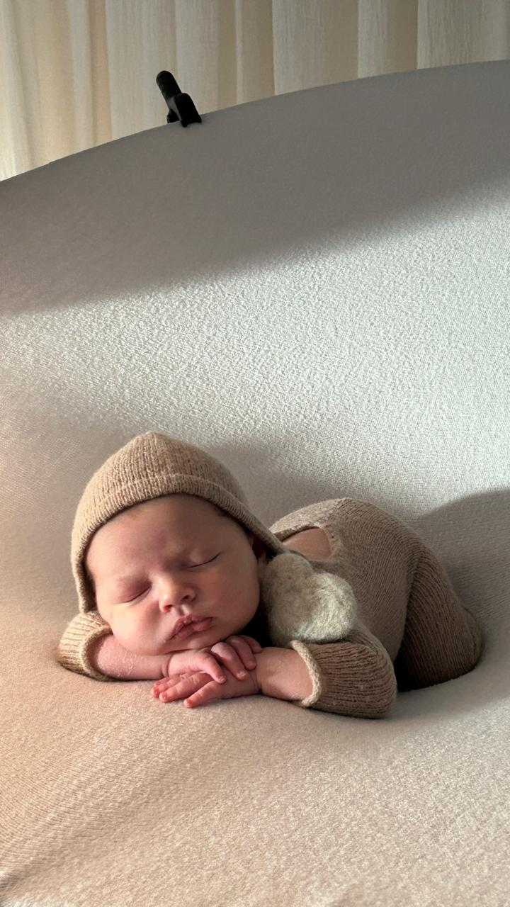
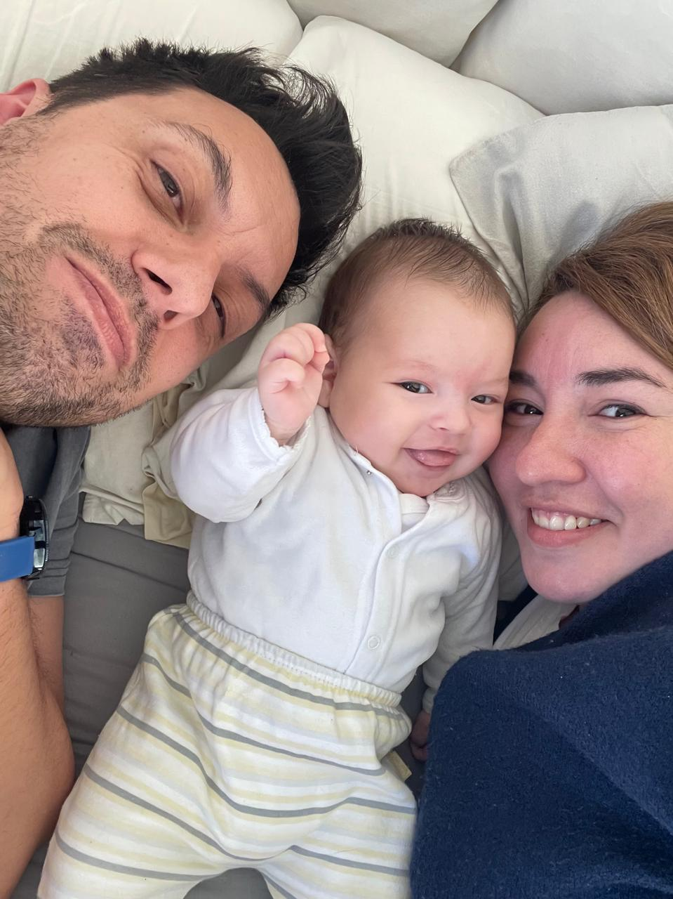
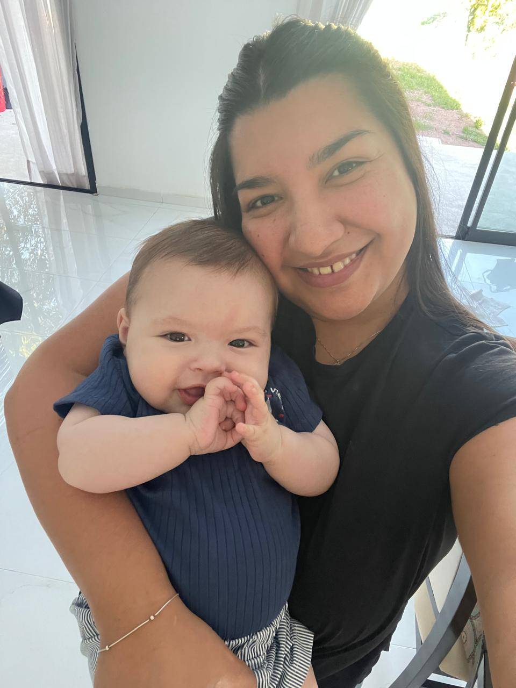
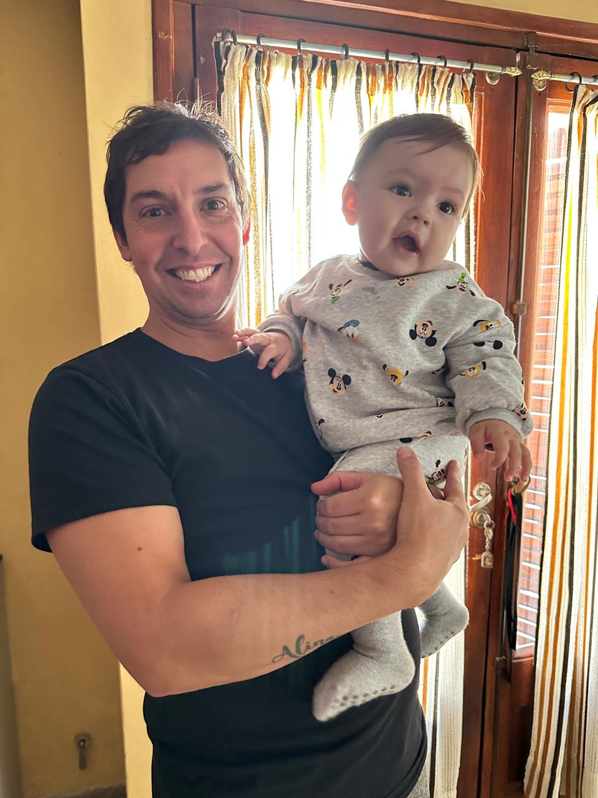

Bautismo
Un espacio para acompañar a Giovanni en su bendición y en el comienzo de este camino de fe, rodeado de quienes más queremos, junto a Mis Padrinos Jessica y Roman.
Bautismo + 1er cumpleaños
Un día de ositos, bendiciones y mucha ternura
Entre nubes suaves, abrazos y ositos de peluche, vamos a celebrar el bautismo y el primer año de Giovanni en una jornada llena de amor.

Temática
Ositos de pelucheSábado
18.07.2026Nuestro osito
Cumple 1 añoUna celebración doble
Un espacio para acompañar a Giovanni en su bendición y en el comienzo de este camino de fe, rodeado de quienes más queremos, junto a Mis Padrinos Jessica y Roman.
Después del bautismo seguimos festejando su primer añito con una tarde llena de ternura, detalles pastel, abrazos y muchos besos.


Recuerditos de Gio
Dejé armado un slider con reproducción automática, flechas y puntos. Por ahora mezcla las fotos disponibles con espacios listos para completar cuando sumes el resto del álbum.
Su gente más cercana
Papás de Gio
Espacio pensado para mostrar a quienes lo abrazan todos los días.

Papá

Mamá
Padrinos
También dejé el bloque del bautismo listo para sumar sus nombres y sus fotos.

Madrina

Padrino
Ceremonia
Lugar: Parroquia Nuestra Señora de La Merced Alta Gracia
Horario: 17:45 hs
Dirección: Nieto, Poluyan Alta Gracia - Cordoba
Ver en MapsFestejo
Lugar: Amerian Córdoba Park Hotel
Horario: 19:30 hs hasta 23:30 hs
Dirección: Boulevard San Juan 165 - Cordoba Capital
Ver en MapsAgenda del día
Espacio reservado para sumar detalle de la ceremonia.
Lugar para indicar si hay merienda, brindis, fotos familiares o momento de bienvenida.
Acá podemos sumar torta, show, souvenirs o cualquier detalle.
Confirmación
Completa los datos para tener una referencia rápida. También dejé un botón listo para conectar después con WhatsApp y facilitar la confirmación.
La confirmación se prepara y se envía directo por WhatsApp.